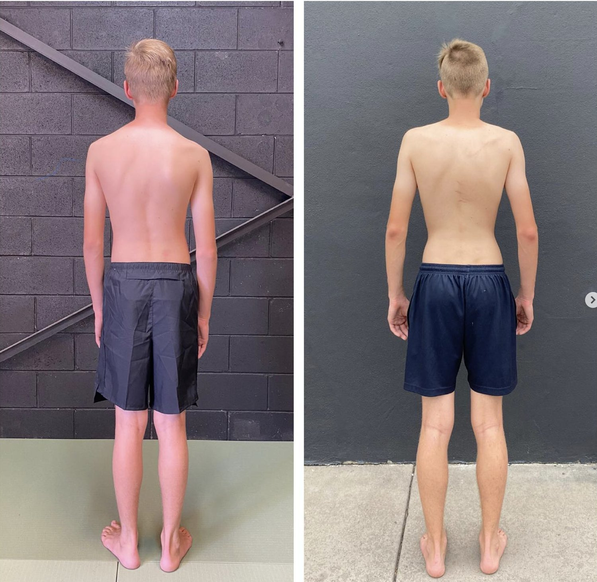
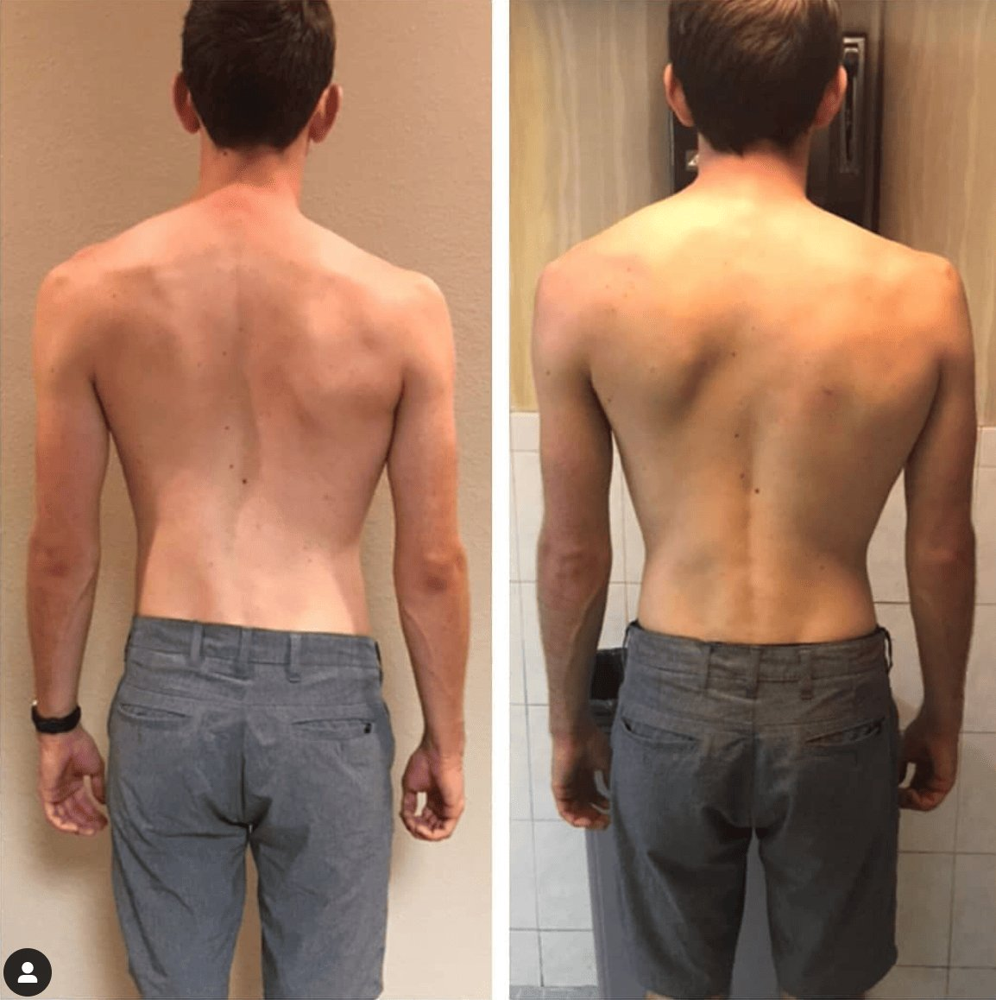

Scoliosis Physiotherapists work with various spinal conditions and types of scoliosis (including neuromuscular scoliosis and congenital scoliosis). Individuals with scoliosis often receive referrals to physiotherapists for early detection and evidence based support.
A scoliosis physiotherapist typically begins by running through an assessment of the patient's spine, posture, and overall alignment. This process usually involves visual and physical examinations to identify the degree and type of spines curve.
It also looks to find any muscle imbalances or asymmetries related to the curve. The scoliosis physiotherapist may also use tools to measure the curve more accurately and might review imaging studies. This includes X-rays to understand the spine's structure and condition in detail.
Treatment often focuses on exercises designed to strengthen the muscles surrounding the spine, improve flexibility, and correct postural imbalances. These exercises commonly include specific stretches, core stability routines, and muscle-strengthening activities. They aim to support the spine and reduce the progression of the curve.
Manual therapy techniques such as massage or mobilising joints are also common. These aim to relieve pain and improve mobility. The physiotherapist may also provide advice on posture correction and ergonomic adjustments to help manage scoliosis in daily life.
While physio can be effective in managing scoliosis symptoms, it has its limitations. The approach often focuses on treating the symptoms and managing the condition. This is the focus rather than addressing the root causes of the movement dysfunctions that contribute to scoliosis.
Physiotherapy exercises typically isolate specific muscle groups. They often will not integrate with the body's overall movement patterns. This can lead to improvements in strength or flexibility without correcting deeper issues with your movement. These movement pattern issues contribute to scoliosis.
Functional Patterns focuses on how the body moves as a whole. This offers a more comprehensive approach to managing scoliosis by addressing both the symptoms and the underlying movement dysfunctions.
Scoliosis physio provides valuable tools and techniques for managing the condition. But, it falls short in addressing the systemic movement issues that contribute to scoliosis. An integrated approach offers a more complete solution for long-term management and curve reduction.
Understanding the Difference Between Functional Patterns and Scoliosis Physiotherapy
When it comes to managing scoliosis, two primary approaches often come to mind: traditional scoliosis physio and Functional Patterns. Both aim to improve the quality of life for those with scoliosis, but they take different paths to get there.
A scoliosis physiotherapist typically starts with a detailed assessment of the spine, often using methods like the Schroth method. This method involves specific exercises designed to strengthen the muscles around the curvature of the spine. It also targets postural alignment.
The physiotherapist might also incorporate manual therapies to relieve pain and increase flexibility. For those with mild scoliosis, these methods can be effective in managing the condition. They can reduce discomfort, and sometimes slow the progression of the curve.
In addition to exercises, scoliosis physiotherapy may involve the use of scoliosis braces, particularly in cases of idiopathic scoliosis. These braces aim to prevent the curve from worsening by holding the spine in a more neutral position.
However, this approach often focuses on symptom management rather than addressing the root cause of the spinal curvature. While scoliosis treatment through traditional physio can provide relief, it often requires ongoing treatment and adjustments.

Functional Patterns Scoliosis Results
The Functional Patterns Approach: A Different Perspective
Functional Patterns, on the other hand, offers a different perspective on scoliosis treatment. Most practices solely focus on the spine's curvature or isolated muscle groups. Functional Patterns emphasises the importance of correcting faulty movement patterns that contribute to scoliosis. This method involves a holistic view of the body, looking at how the entire system moves and functions together.
One of the key differences between Functional Patterns and traditional scoliosis physical therapy is the emphasis on analysing gait. At a Functional Patterns clinic, the assessment often begins with a detailed examination of your gait cycle.
This allows practitioners to see how your body moves during walking and/or running. This allows the practitioner to identify any asymmetries or dysfunctions that could be contributing to your scoliosis. By addressing these issues at their source, Functional Patterns aims to correct the underlying causes of the curvature. This provides long-term changes, rather than just addressing the symptoms.
For example, your scoliosis physiotherapist may focus on strengthening specific muscles to support the spine. However, a Functional Patterns practitioner might look at why those muscles are weak in the first place.
They would then work to improve overall movement patterns. They ensure that the correct muscles activate in the correct sequence during activities like walking or running. This approach not only aims to reduce the curvature of the spine but also to enhance overall quality of life. It does so by improving movement efficiency and reducing pain.

Functional Patterns Scoliosis Results
Moving Beyond Traditional Approaches
Traditional scoliosis physio often involves static exercises and manual therapies that are effective in managing symptoms. The focus on specific areas rather than the body as a whole can limit the effectiveness of these methods. While soft tissue work can relieve tightness and improve flexibility, it will not address the dysfunctional movement patterns. These patterns are what often cause these issues in the first place.
Functional Patterns takes a more dynamic approach, integrating movement re-education with myofascial release. This not only targets soft tissue imbalances but also works to correct the movement dysfunctions that contribute to scoliosis. This method encourages the body to move in an optimal and efficient way. This can lead to long-term improvements in spinal alignment and overall health.
The Downsides of Traditional Scoliosis Physiotherapy
While traditional scoliosis physical therapy can be effective, it’s important to recognise its limitations. The exercises an experienced physiotherapist prescribe often aim to address specific symptoms. However, they may not always consider how these exercises fit into the body's overall movement patterns.
This can sometimes lead to improvements in isolated areas without fully correcting the underlying issues. In future, more asymmetries and complications can arise from untreated faulty movement patterns.
Additionally, scoliosis braces can be effective in preventing further curvature. However, they do not teach the body how to move better on its own. Over-reliance on braces can limit the body's natural ability to adapt and strengthen in a balanced way.
While scoliosis physiotherapy provides valuable tools and treatment options, it might not always offer a comprehensive solution. Major recovery requires finding a solution that addresses the root causes of the condition.

Functional Patterns Scoliosis Result
Functional Patterns: A Comprehensive Solution
Functional Patterns offers a more holistic approach by focusing on improving movement patterns. The system addresses the systemic issues that contribute to scoliosis.
By analysing your gait and overall body mechanics, FP aims to correct the root causes of the curvature. This is what leads to Functional Patterns significant and sustainable results. The goal is not just to manage the symptoms but to re-train the body to move correctly. This reduces pain and improves overall function.
Both scoliosis physio and Functional Patterns provide valuable approaches to managing scoliosis. However, Functional Patterns may offer a more comprehensive solution by focusing on the body's movement patterns and overall function.
This method aims to correct the root causes of scoliosis. This leads to long-term improvements in posture, spinal alignment, and quality of life. If you’re looking for a treatment that goes beyond symptom management, Functional Patterns could be the right choice for you.

Free 2-Page Guide
The 5 Things Physios Miss — and The 5 Things You Actually Need to Fix Pain
Tried everything, but your pain keeps coming back?
This free guide reveals why most physio and rehab methods fail to create lasting results — and what’s really behind recurring pain. You’ll learn what traditional approaches often overlook, and the key movement principles that actually rebuild function, improve posture, and help you move pain-free long term.